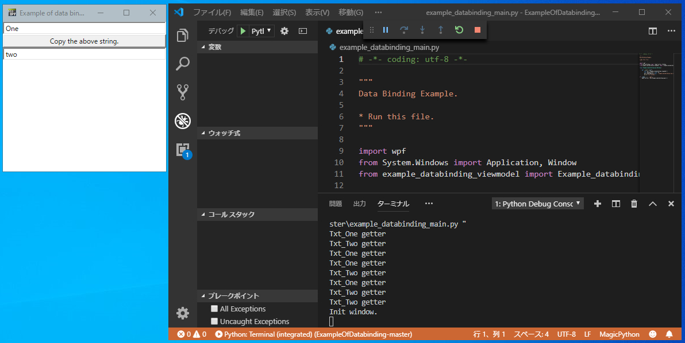

前回、IronPythonスクリプト上でXAMLを使ったGUIを試してみました。今回はさらに、WPF + XAML + MVVMパターンを使い、データやコマンドのバインディングしてみます。
こちらのスクリプトを使って説明しますので、[Clone or download]からzipファイルをダウンロードしてください。
スクリプトの実行方法は、「IronPythonのスクリプトをVisual Studio Codeで実行する方法」を読んでください。.vscode\settings.jsonのpythonPathを適切に設定することを忘れないでください。
正常に動作すると下の画像の左上のダイアログ（Example of data binding）が表示されます。

テキストボックスを変更したり、ボタンを押すとターミナルに表示される標準出力が追加されていき、データやコマンドがバインディングされているのが分かります。
ちなみに、ボタンを押すと上のテキストボックスの内容が下のテキストボックスにコピーされます。
example_databinding_main.pyを見てください。
def __init__(self):
self.vm = Example_databinding_viewmodel()
self.DataContext = self.vm
wpf.LoadComponent(self, 'example_databinding_view.xaml')
print('Init window.')ビューモデルのインスタンスを作成し、
Windowのデータコンテキストにそのビューモデルを適用し、
XAMLファイルをWindowクラスに適用しています。
INotifyPropertyChangedインターフェースとICommandインターフェースINotifyPropertyChangedインターフェースとICommandインターフェースを実装したクラスを作成します。
BindableBaseクラスとDelegateCommandクラスがそれにあたります。
「WPF and MVVM in IronPython」や、「「IronPythonでインターフェースのイベントを実装する（貧脚レーサーのサボり日記）」などを参考にしました。（というかコピーです）
ViewModelであるexample_databinding_viewmodel.pyでは、2のクラスを使って、変更通知プロバティやコマンドを実装しています。
変更通知プロバティについては、C#でプログラミングする際にLivetを良く使うので、Livetのものと似た書き方になっています。
コマンドについては、以下の一行でできてしまいます。
14行目
self.Run_Btn_One_Command = DelegateCommand.py(self.Run_Btn_One)Run_Btn_One_Commandは、XAMLファイル内からバインディングすることができます。 Run_Btn_Oneは、実際に実行されるメソッドです。（デリゲートですね）
CPythonでは、Kivyが似たような感じかもしれません。CPythonとIronPythonだと、どうしてもモジュールの多さからCPythonに軍配が上がります。しかし、データバインディングが使える点やMVVMパターンを使ったプログラミングをできる点では、IronPython + WPF +XAMLにもメリットを感じます。